Work
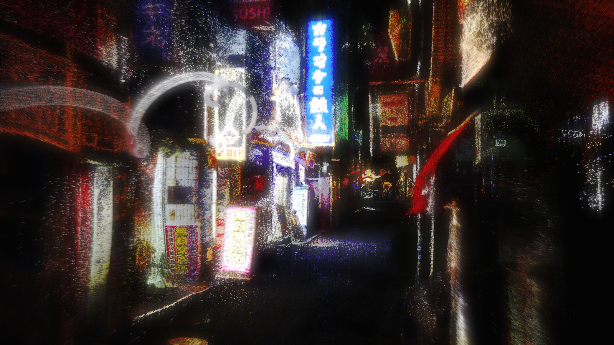
[001] · 2025
In Between

[002] · 2025
No Signal
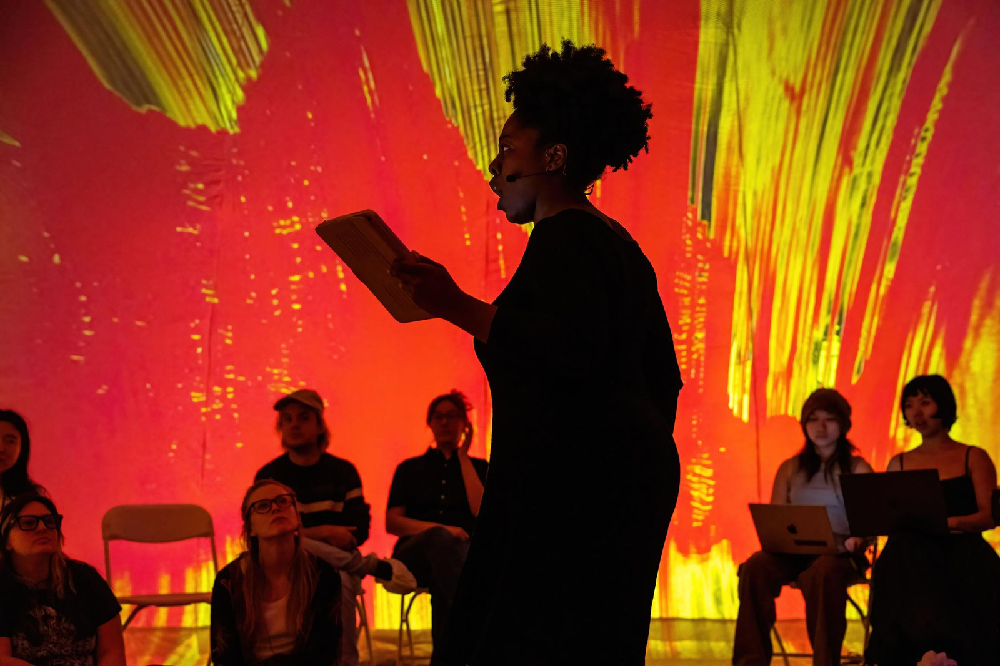
[003] · 2025
Heretic
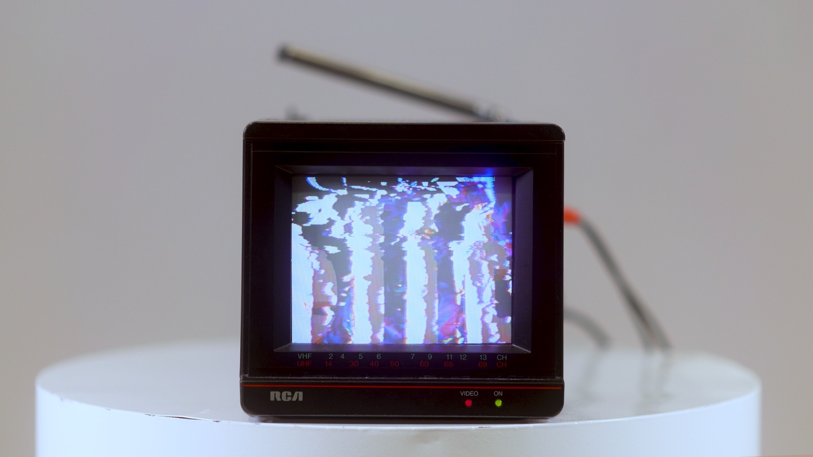
[004] · 2025
Word
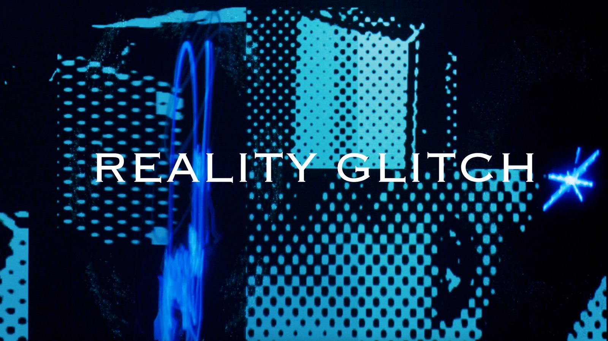
[005] · 2024
Reality Glitch.V0
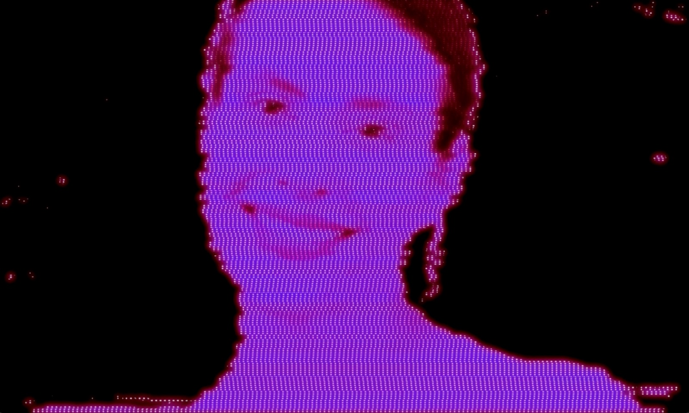
[006] · 2024
Digital Anomalies
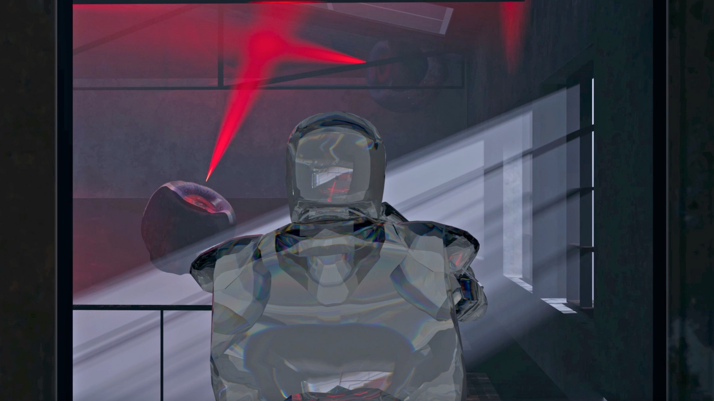
[007] · 2023
Get Out!
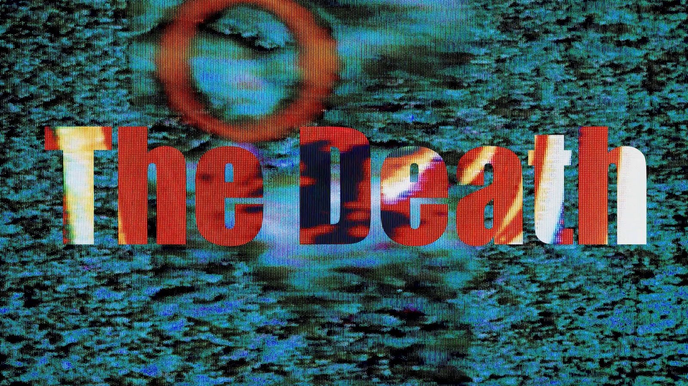
[008] · 2024
Reborn
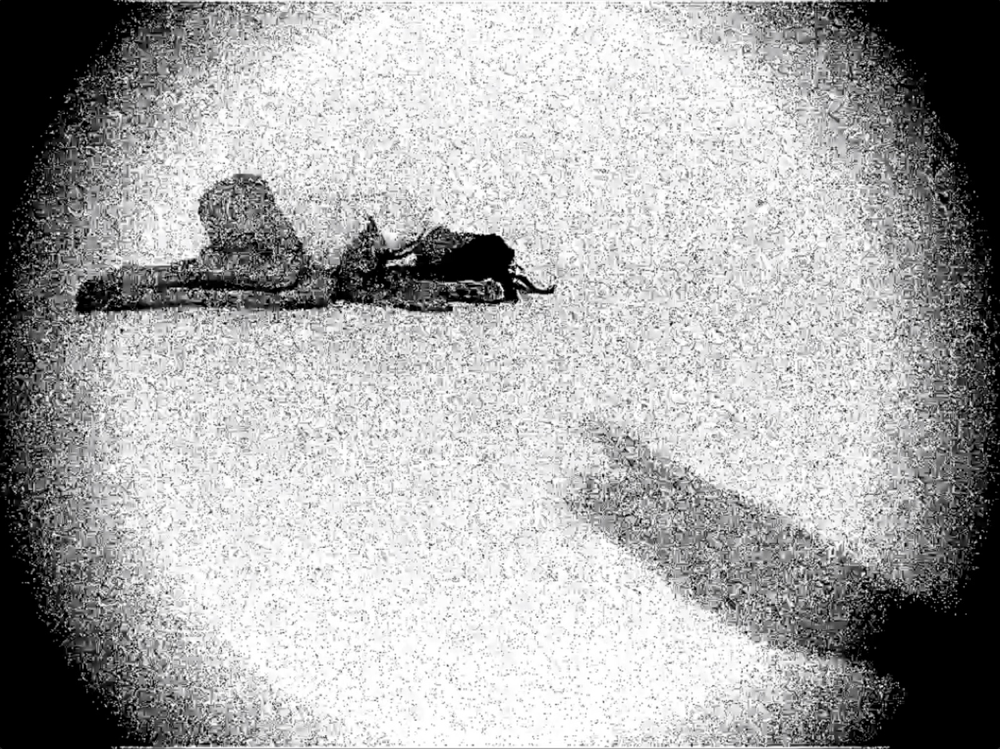
[009] · 2024
Control
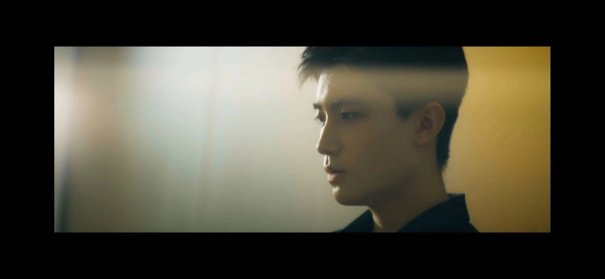
[010] · 2024
The Time on the Watch
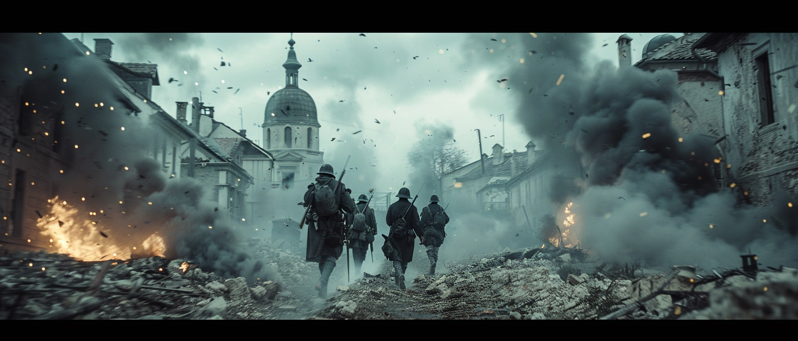
[011] · 2024
Epochs

[012] · 2024
Remembrance and Forgotten
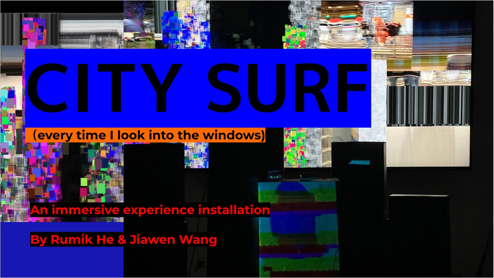
[013] · 2023